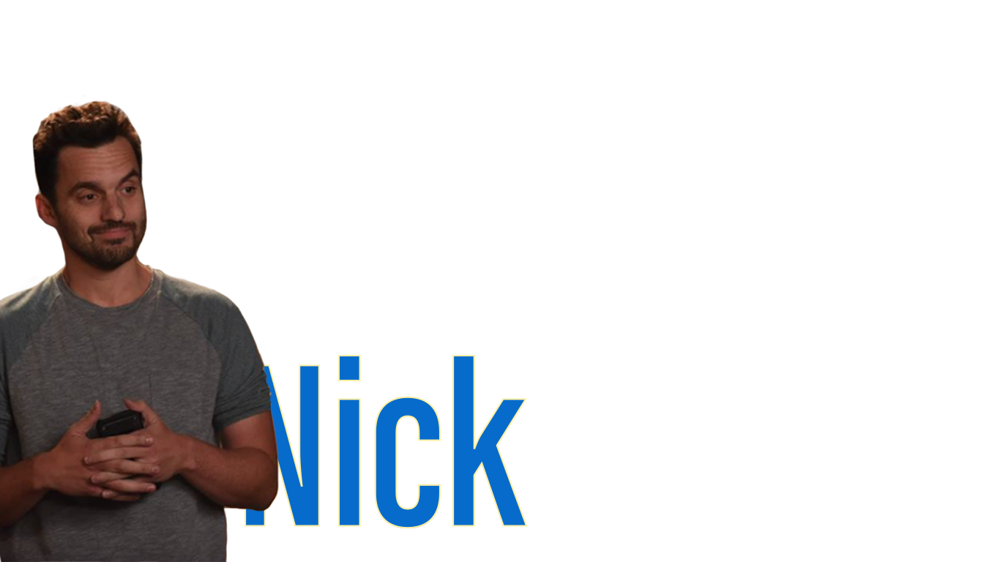
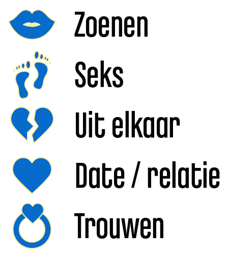
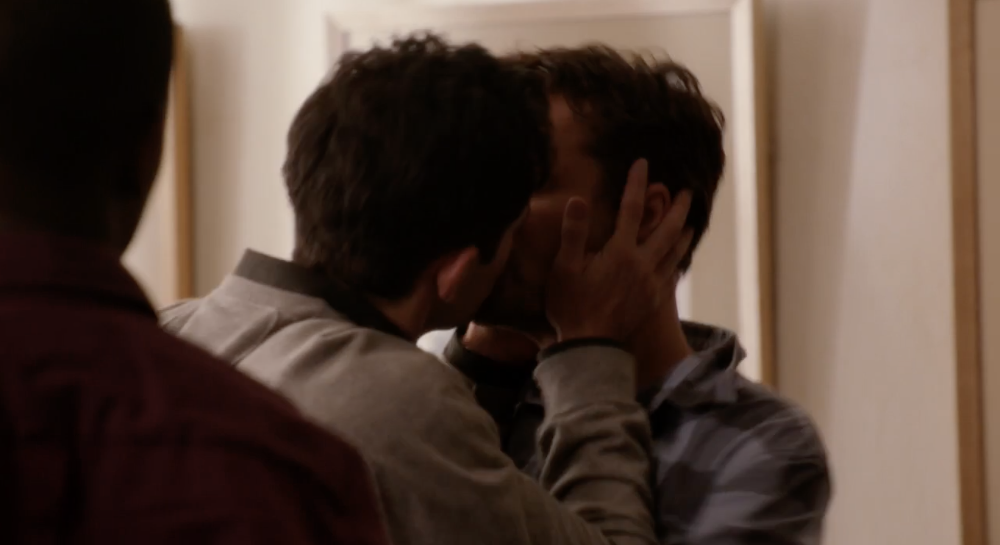
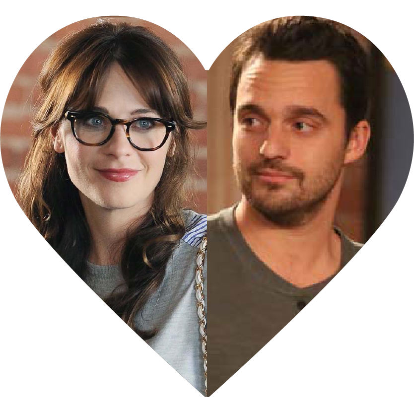
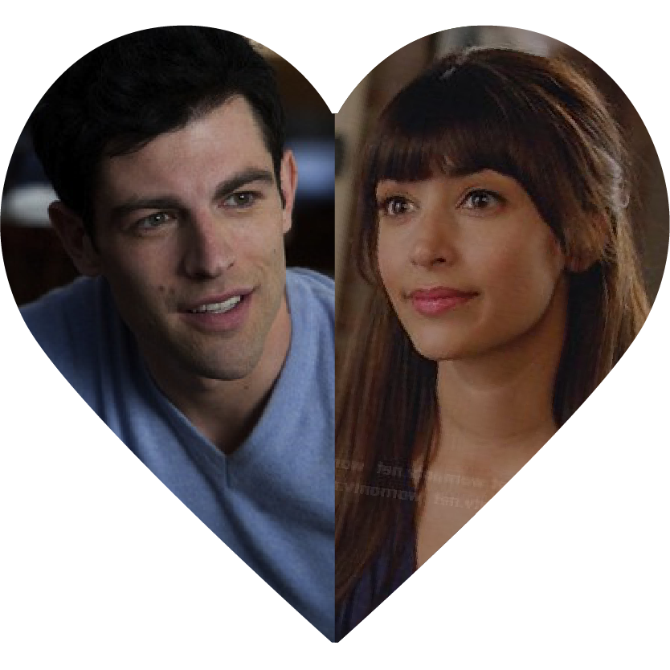
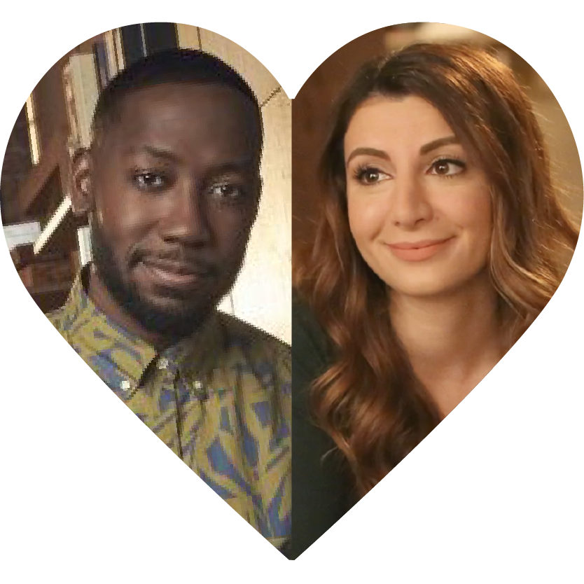

Jess is het hoofdkarakter van de serie. Ze probeert haarzelf terug te vinden na een schokkende breuk met haar vriend, die ze betrapt op vreemdgaan. Ze is docent op de basisschool en dit is helemaal haar passie. Ze houdt van knutselen, maar heeft er niet veel tijd meer voor. Ze had een nieuwe plek nodig om te wonen omdat ze het uitging met haar vriendje, dus trok ze in bij drie mannen genaamd Nick, Schmidt en Coach. De beste vriendin van Jess is Cece, een model.

Nick Miller
Nick is een van de drie mannen uit de loft waar Jess bij woont. Al vanaf het begin heeft hij een goeie klik met Jess, heel stiekem vind hij haar vanaf het eerst moment dat hij haar zag al leuk. Nick is een enorme sloddervos en is vaak chagrijnig, mensen in de serie omschreven hem soms als een oude man. Wel is hij heel erg lief voor Jess en staat hij altijd voor haar klaar. Daarnaast werkt hij in een bar, waar zijn vrienden vaak rondhangen.
Een datavisualisatie van de serie New Girl
"All the crazy love stories"
All the crazy love stories
Jess
Nick
Schmidt
Cece
Winston

Jess ontmoet Paul op de school waar ze werkt. Hij werkt aan een toneelstuk en is net zo gek als Jess. Na de breakup van
Jess heeft ze het gevoel dat ze weer klaar is om te daten, dus vraagt ze of Paul kan afspreken. Hij komt langs tijdens
Thanksgiving, de klik is goed maar bij de Thanksgiving gaat verder alles mis..
Nick ontmoet advocate Julia, ze beginnen rustig en besluiten niet om iets serieus te beginnen. Julia is namelijk erg druk bezig
met haar werk en heeft weinig tijd. De gevoelens beginnen alleen in de loop der tijd wel heftiger te worden.
Tijdens de eerste bruiloft die Jess, Nick, Schmidt en Winston samen bezoeken komt Schmidt Gretchen weer tegen. Het is
niet een heel aantrekkelijke vrouw, een beetje mannelijk. Schmidt probeert andere meiden te versieren, maar wanneer dit niet
lukt besluit hij toch (weer) met Gretchen mee te gaan.
Jess neemt Cece 's avonds dronken mee naar huis, Schmidt grijpt zijn kans en brengt Cece naar zijn kamer zodat ze in
zijn bed gaat slapen. Wanneer hij er later naast komt liggen, pakt Cece onverwachts zijn hand vast en valt zo in slaap.
Schmidt komt langs bij Cece om haar een cadeau te geven (zelfgemaakte parfum). Net wanneer hij dit geeft komt haar
vriend langs, Kyle. De relatie is van korte duur.
De relatie tussen Kyle en Cece is uit.
Winston heeft al eerder iets met Shelby gehad, en besluit weer contact met haar op te nemen. Eerst verloopt dit niet goed,
maar na een aantal pogingen slaat de vonk over en krijgen de twee een relatie.
Jess komt erachter dat Paul meer voelt voor haar dan andersom. Omdat ze zich hier schuldig over voelt besluit ze om het
uit te maken. Wanneer ze op een feest zijn vertelt Nick dit echter per ongeluk aan Paul voordat Jess het heeft verteld,
het wordt een ongemakkelijke situatie.
Nick krijg heel erg paniek omdat Julia een cactus stuurt als cadeau wanneer ze weg is. In de paniek spreekt hij tientallen dronken voicemail
berichten in, Julia schrikt hier zo erg van dat ze besluit om het uit te maken.

In deze aflevering gaat Nick naar een dokter, waarbij er een kans is dat Nick kanker heeft. Iedereen is helemaal van slag,
wanneer blijkt dat Nick helemaal gezond is geeft Schmidt Nick een kus.
Schmidt en Cece slapen voor het eerst met elkaar, maar Cece wil dit absoluut geheim houden. Ze ziet dit als een grote fout,
maar het blijft niet bij deze ene keer.



Nick & Jess
Eigenlijk heb je vanaf het begin van de serie al de hoop dat Nick & Jess bij elkaar gaan komen.
In de serie draaien ze vaker om elkaar heen en zijn ze erg goede vrienden. Ze hebben heel veel lol samen, kunnnen gek doen
samen en zijn heel close. De eerste keer dat ze een relatie krijgen
gaan ze helaas ook weer uit elkaar, maar helemaal aan het eind van de serie komen ze toch weer bij elkaar.
Schmidt & Cece
Al vanaf het begin van de serie is Schmidt gek op Cece, maar hij is nog lang niet klaar voor een serieuze relatie.
Toch groeien ze langzaam naar elkaar toe, ze komen meerdere keren bij elkaar. Uiteindelijk zijn zij de eerste in de serie die zich
definitief 'settelen'.
Winston & Aly
Wanneer Winston uiteindelijk wordt aangenomen als politie agent, wordt Aly zijn partner. Al snel krijgt Winston
gevoelens voor haar, maar zij heeft eerst nog een relatie met iemand anders. Wanneer Winston echter laat zien hoeveel
hij om Aly geeft, komen ze uiteindelijk toch bij elkaar.